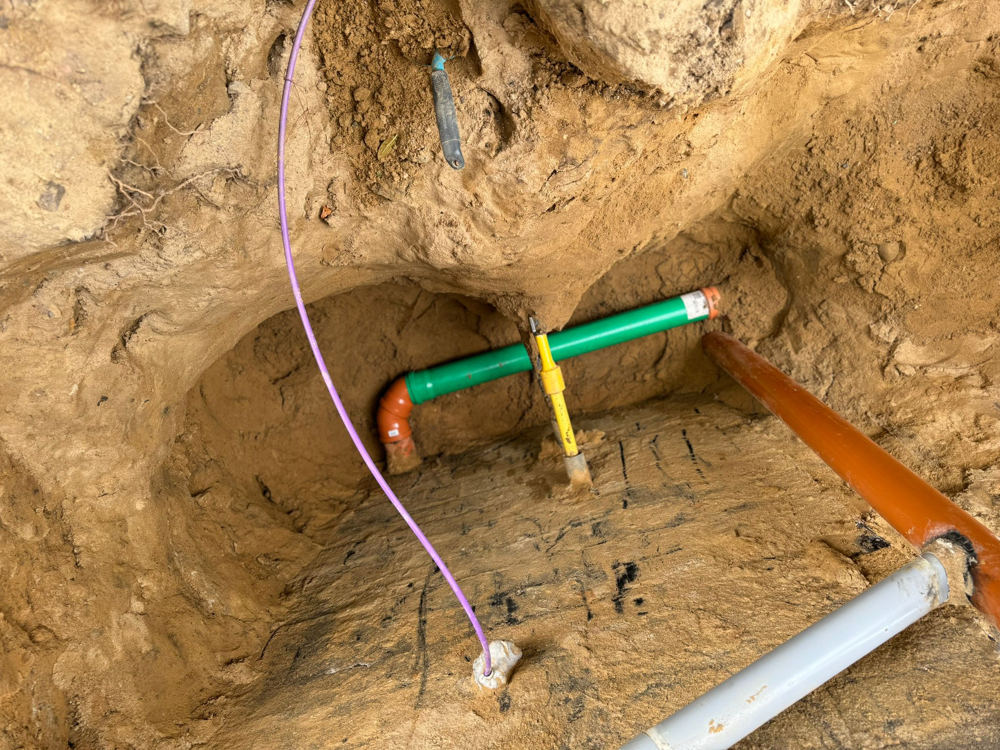
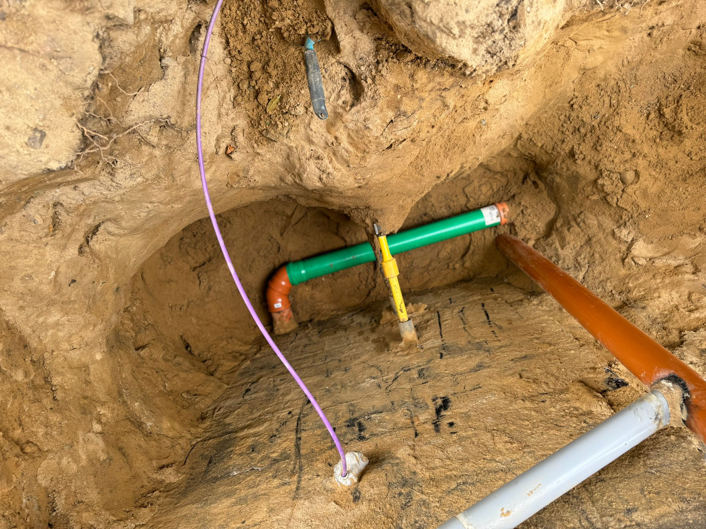
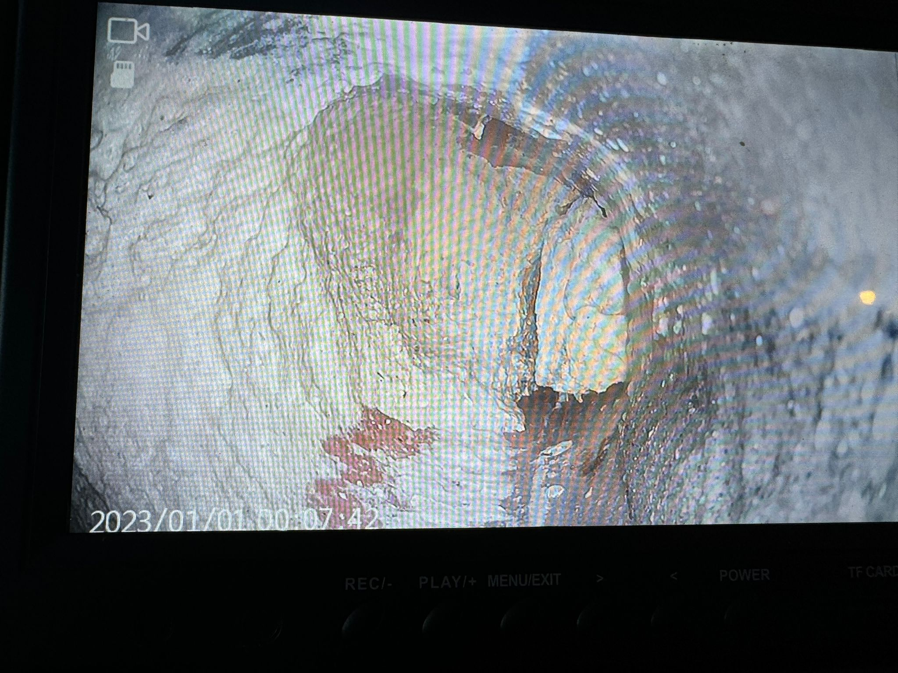
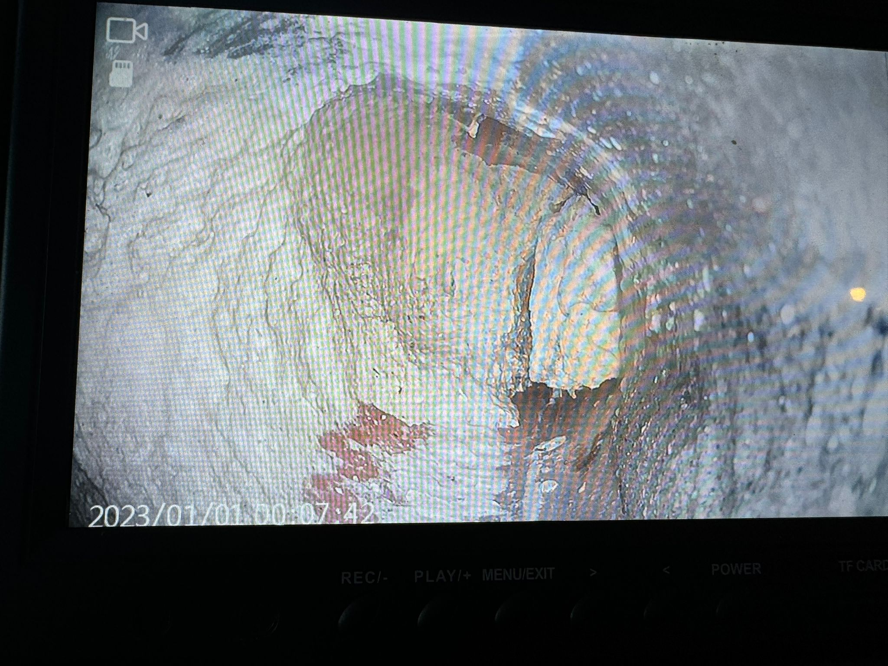

Klempner Service
Unser Klempner Service bietet Ihnen schnelle und zuverlässige Hilfe bei allen Problemen rund um Ihre Wasserleitungen und Abflüsse. Egal ob es sich um eine einfache Verstopfung handelt, die gelöst werden muss, oder um eine komplexe Reparatur an den Rohrleitungen - wir sind für Sie da.
Rohrbruch Reparaturen
Ein Rohrbruch kann erhebliche Schäden verursachen, wenn er nicht sofort behoben wird. Wir bieten Ihnen eine professionelle Leckageortung und schnelle Reparaturen, um den Schaden so gering wie möglich zu halten. Unser Team ist rund um die Uhr einsatzbereit, um Sie in Notfällen zu unterstützen.
Rohrreinigung
Verstopfte Rohre können unangenehme Gerüche und Rückstaus verursachen. Mit unserer modernen Kameratechnik können wir das Problem genau lokalisieren und effizient beheben. Wir bieten auch präventive Kanalreinigungen und Wurzelentfernungen an, um zukünftige Probleme zu vermeiden.
Schlüsselnotdienst
Es passiert schneller als man denkt: Die Tür fällt zu und der Schlüssel liegt noch drinnen. Unser Schlüsselnotdienst hilft Ihnen schnell und kompetent weiter, egal ob es sich um Ihre Haustür, Ihren Tresor oder Ihr Auto handelt. Wir sind 24/7 für Sie erreichbar.
Schädlingsbekämpfung
Ungeziefer und Schädlinge können nicht nur unangenehm, sondern auch gesundheitsgefährdend sein. Unser Team bietet effektive und nachhaltige Lösungen zur Bekämpfung von Schädlingen, damit Sie sich in Ihrem Zuhause wieder wohlfühlen können.
Dachreinigung
Ein sauberes Dach schützt Ihr Haus besser vor Witterungseinflüssen. Unsere Dachreinigung entfernt Moos, Algen und andere Verunreinigungen, die Ihrem Dach schaden könnten. So bleibt Ihr Dach länger in gutem Zustand.
 



 
